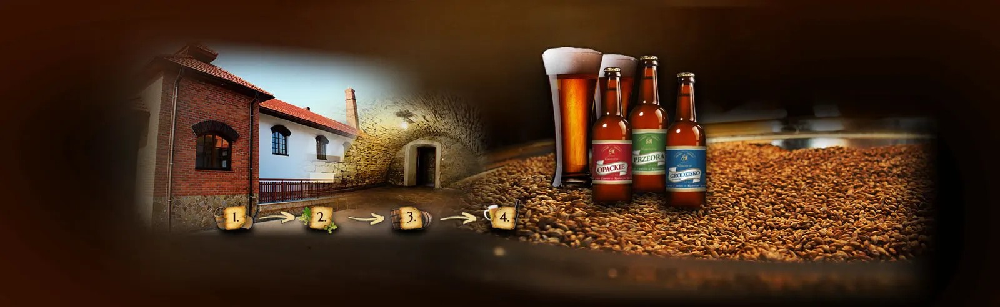
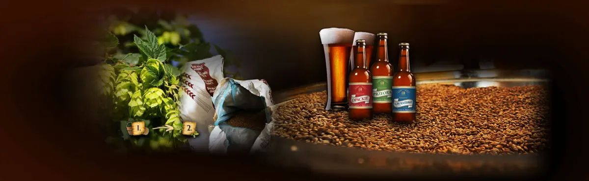
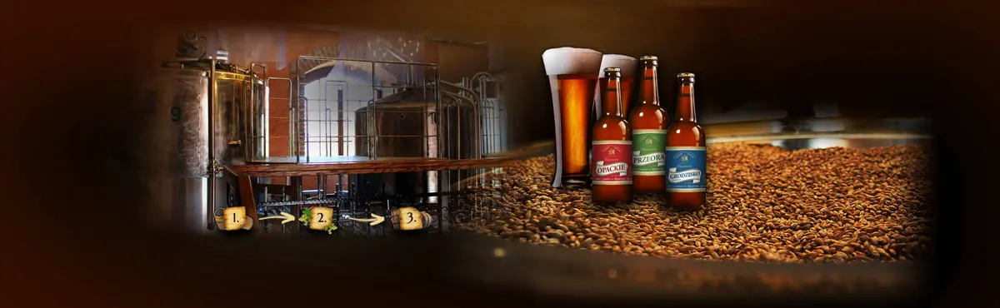

Obfite źródło
Każde nasze piwo warzymy na wodzie źródlanej — to ona decyduje o charakterze warki.

Szczyrzyc · powiat limanowski
Trzynaście piw na wodzie źródlanej — od klasztornego pilsa po Imperial Black IPA. Browar prowadzą cystersi, którzy odzyskali go w 1993 roku.
Cztery wieki
26 kwietnia staje w Szczyrzycu drewniany browar. Pierwsze warki odbywają się jeszcze w prymitywnych zabudowaniach.
Decyzją opata Józefa Onufrego Grzymisławskiego powstaje browar murowany.
Ruszyło warzenie piwa wysokoprocentowego. O smaku przesądzały drożdże dodawane wprost do beczki.
Wszystkie prace przy produkcji wykonywano ręcznie — prawdziwa manufaktura. Piwo nazywało się Złoty Zdrój i reklamowało jako „mocne jak głos Kuryera i słodkie jak głos Kiepury”.
Upaństwowiony zakład działa najdłużej pod nazwą Browar Podhalański w Szczyrzycu.
Rocznie warzy się tu 22 tysiące hektolitrów. Piwo trafia do Dobrej, Limanowej, Rabki, Myślenic, Dobczyc i Krakowa.
Po ciężkich bojach ojcowie cystersi odzyskują browar wraz z majątkiem.
Jak powstaje
Każde nasze piwo warzymy na wodzie źródlanej — to ona decyduje o charakterze warki.

Słody pilzneński, monachijski i karmelowy, chmiele Marynka, Lubelski, Spalt Select czy Citra.

Warzenie prowadzimy bez pośpiechu, tak jak robiono to tu przez cztery stulecia.
Na miejscu
Kuchnia beskidzka w Centrum Turystycznym Ziemi Szczyrzyckiej im. Opata Benedykta Birosa. Ściany zdobią malowidła, a największe z nich przedstawia mapę powiatu szczyrzyckiego z czasów jego gospodarczej potęgi.
Noclegi przy browarze, Szczyrzyc 195. Rezerwacje pod numerem 18 332 06 00.